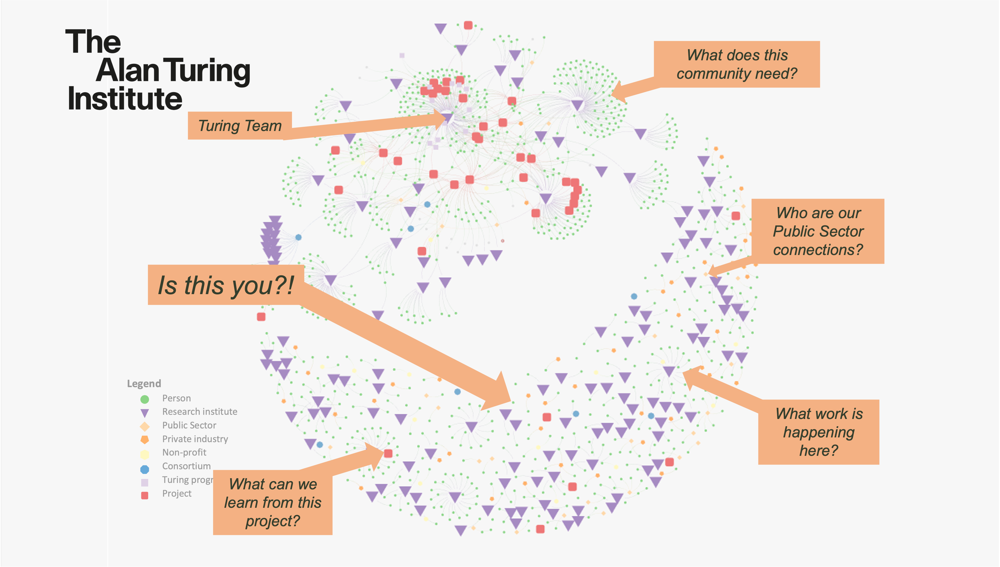

E&S Community Strategy#
GC Mission, vision and values#
Mission of the GC to “harness knowledge to best effect […] maximise the usefulness of our existing observations […] leverage solutions and ideas seamlessly from across disciplines […] bridge and integrate data and deploy solutions in a timely manner to help secure our planet for future generations.” (Turing E&S GC website) note this mission need to be stated more explictly on the website and our materials
Strategy framework#
The community strategy is a set of principles which will guide decision making and resource allocation within the GC. Development of the strategy and strategic implementation plan will follow the below framework:
Diagnosis - Understanding the baseline and the unique value proposition of the community. This phase will also uncover and develope measurable features of the community which can later be used to understand the efficacy of the strategy;
Design - Developing a mission and vision for the community aligned with the mission of the GC. The community mission, vision and values should be co-designed with, and well understood by, the GC community and delivery team;
Execute - Develop high-level initiatives and specific measureable actions which will help move the community towards achieving the mission and visions, in alignment with the values;
Empower - Boost understanding of the community strategy in the community itself and the delivery team, to make sure that it is integral to decision making and resource allocation. This will include regular reporting against the developed metrics and revision of the implementation strategy where the needs of the community change, the context of operation is significantly altered or initiatives are not successful.
The following documents our progress in developing the strategy against this framework.
Diagnosis - Baseline at the start of the GC#
Composition of the community#
The E&S GC community was broadly considered to be comprised of:
Turing employees engaged in research relevant to E&S
Researchers (and their employers) at our partner institutes engaged in research relevant to E&S
Individuals (and their employers) on the Turing Environment and Sustainability Interest Group (TIG) Mailing list
Individuals (and their employers) on the Turing Environment and Sustainability Slack workspace
At 1st January 2024, there were ~400 people on TIG the mailing list and ~600 on slack, but no estimate of overlap or understanding in relation to clusters of interest. Hence there was no accurate way to baseline the community or understand the efficacy of any community strategy (for example to grow or engage with researchers).
Value Proposition 1: We should collate the disperate groups of stakeholders in a national programme data science for environment and sustainability into a unified structure and map. In line with the guiding principles of the Research Community Management (RCM) team, this map should be published and dissemainated so the community can understand the context in which they are operating and improve the visibilty of their projects to support impact. Importantly, this collation should include potential contributors to the Community of Use for research outputs (such as Private and Public sector organisations) which can act as valuable partners in growing the impact of this work, as facilitated by the Research Application Management (RAM) team.
Community personas#
We need to understand the priorities of our community, what they care about and what infrastructure we can develop to support and facilitate their success. We also need to understand areas where the E&S GC can provide additionality and plug gaps, to further the growth of this ecosystem.
To do this, we need to know who the community are and what messaging and processes we should use to engage with them. This understanding can be built from community personas and associated contributor pathways. The personas can describe different levels of skill and experience with research which contributes to the mission of the GC and community. At the start of the GC, there were no documented community personas, and hence no structured way to build engagement activities for the varied community members.
Community health#
At the start of the GC, there was no framework for measuring community health.
In the RCM team, we consider “commmunity health” to cover factors such as engagement level, degree of contribution and trust within the community. We can also consider factors such as community-initiated collaboration or organisation into interest groups as indicators of autonomy (self-organising to serve the interests of the community) and sustainability of the community. These factors are considered and against the a “mountain of engagement” model, developed by Mozilla and shared via Open Life Sciences.
Design#
Community Mission, vision and values#
The focus should be on fostering high-performance collaboration to hasten progress towards the GC mission
RCM values for effective collaboration: Transparency, Leadership, Inclusivity, Respect, Trust, Integrity
TTW mission: reproducible, ethical and collaborative data science
Culture change: Support, reward, celebrate
Execute (initiatives)#
Stakeholder map#
We believe building and maintaining an accurate map of stakeholders in this work will support operational delivery of the missions, and
Our first efforts have been to capture and collate members of the groups outlined above into a single database. This has been achieved through building a stakeholder map, visualised using kumu. See Stakeholder mapping for details of this process.
Our public stakholder map is now live.

Embedded map
Community personas#
Facilitating engagement#
There is a significant amount of activity
Comms, visibility and networking#
Advocacy (internal, from the delivery team, from the community)
Community calls (building awarenss of eachothers activities)
Community story
SIG calls and topics
Research project presentations
Slack and slack round-up
Structured networking (e.g. donut calls)
E&S events calendar#
Modelled on Open Research Calendar
Promote and facilitate community organising#
Special interest groups following process documented by CSCCE, inc supporting community events
Facilitating engagement with GC strategy (devising missions and prioroty areas) - remember we are a national conviening body
Facilitating collaboration#
The route to developing and sharing best practice
Ways of working to promote trust and transparency,
including for the delivery team so there is consistency in engagement processes
Facilitating interoperability (TWINE Environmental DT interoperability workshop with MAS-DT)
IMFe, e.g. asset register
Capacity building#
Managing E&S projects as communities#
Reworking and supporting a cohort of ambassadors through Foundational Community Building
Open research#
Facilitating engagement with The Turing Way
Building and reviewing reproducible research artefacts
Climate Informatics 2024 artefact evaluation, inc adoption by CUP Environmental Data Science journal.
CI2025-AE training pre-meeting
Engagement and promotion of EDS Book